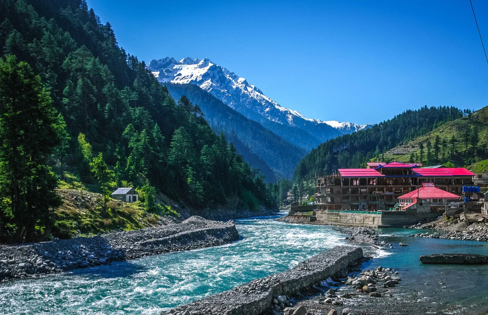

Swat Valley combines river scenery, green hills, towns and cultural history. Malam Jabba, in the surrounding mountains, is known as a resort area with seasonal outdoor activities. A good itinerary balances time on the road with time to explore, and checks which attractions and activities are operating during your visit.
What to see and how to plan
- 1
1. Use Mingora as a practical base
Mingora and nearby areas offer services, shops and accommodation options. Compare location and transport access before choosing where to stay.
- 2
2. Explore the Swat River corridor
The river and surrounding valley are part of the journey. Stop only in safe places and keep away from unstable banks or fast-moving water.
- 3
3. Plan a visit to Malam Jabba
Check current resort operations, weather, road conditions and available activities before travelling. Do not assume every facility operates in every season.
- 4
4. Allow time for local heritage
Swat has a rich cultural history. Choose reputable sites and guides, respect local rules and avoid disturbing archaeological remains.
- 5
5. Choose activities for your season
Summer trips may focus on green scenery and outdoor exploration; winter conditions can change transport and activity availability. Confirm details close to travel.
- 6
6. Avoid overloading the itinerary
Roads between valley attractions can take longer than anticipated. Pick a few priorities and leave room for meals, rest and weather delays.
- 7
7. Ask about local transport
Before hiring a driver, agree on the route, waiting time, return plan and total cost. Keep contact details and pickup locations clear.
- 8
8. Pack for changing temperatures
Bring comfortable shoes and layers, with a rain jacket and sun protection. Mountain weather can differ from conditions in town.
- 9
9. Be a thoughtful guest
Dress respectfully, ask permission for photos and support local businesses. Follow guidance around religious sites and community spaces.
- 10
10. Confirm current travel advice
Check relevant official travel guidance and local conditions before departure, especially if you plan to travel on remote roads or during severe weather.
Practical travel tips
- Check weather and road conditions for both Swat and Malam Jabba.
- Confirm resort facilities and activity prices before travelling.
- Keep the first and last day flexible for transport.
- Use marked paths and leave natural and heritage sites undisturbed.
Explore with Past Enlighten
Ask about route options, dates and what is included. Confirm the price and itinerary in writing before you book.
Continue planning
Travel conditions, access, schedules and prices can change. Confirm current details locally before departure.